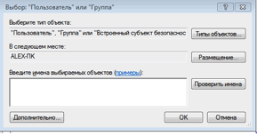
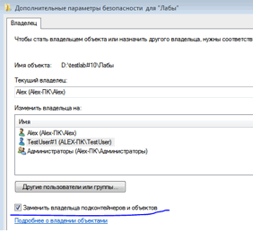

Лабораторная #10 по ОС
Лабораторная работа №10 - «Работа с правами пользователей в Unix и Windows»
Цель работы: Получить представление о работе пользователями и группами в Unix и Windows системах.Введение
В Unix каждому файлу соответствует набор прав доступа, представленный в виде 9-ти битов режима. Он определяет, какие пользователи имеют право читать файл, записывать в него данные или выполнять его. Вместе с другими тремя битами, влияющими на запуск исполняемых файлов, этот набор образует код режима доступа к файлу. Двенадцать битов режима хранятся в 16-битовом поле индексного дескриптора вместе с 4-мя дополнительными битами, определяющими тип файла. Последние 4 бита устанавливаются при создании файлов и не подлежат изменению. Биты режима (далее права) могут изменяться либо владельцем файла, либо суперпользователем с помощью команды chmod.
Существует три пути управления доступом к файлу или каталогу. Было определено, что каждый файл должен иметь владельца (owner), группового владельца (group owner), а также может потребоваться доступ для всех остальных пользователей (everyone). Эти названия обычно приводятся как пользователь/группа/остальные (user/group/others) или коротко ugo. Реализация управления доступом к файлам и каталогам в Unix позволяет или запрещает доступ по трем флагам: флаг чтения (Read), флаг записи (Write), флаг выполнения (eXecute). Они представляются следующим образом
Флаги бывают разные, а точнее:
- Символическая ссылка это просто файл в котором указан путь к другому файлу, директория это директория.
- Блочное устройство – это вид файла устройств в UNIX/Linux-системах, обеспечивающий интерфейс к устройству, реальному или виртуальному, в виде файла в файловой системе
- Символьное устройство - в отличии от блочного устройства символьное устройство, как правило, не обладает возможностями произвольного доступа. В большинстве своём, чтение и запись данных в символьное устройство не буферизуется. Типичные примеры символьных устройств: стриммер, модем, телетайп или терминал.
- Именованные каналы, fifo – Связанны с работой процессов. Это одно из средств взаимодействия процессов между собой. Связанны с работой потоков.
- Unix сокет - Используется в операционных системах, поддерживающих стандарт POSIX, для межпроцессного взаимодействия (обмен данными между потоками одного или разных процессов).
Посмотреть права доступа на объекты можно командой ls c ключом -l («л»). Также можно добавить ключ -a, для того, чтобы были отображены скрытые объекты:
Для назначения прав используются три группы флагов, первая определяет права для владельца, вторая - права для основной группы пользователя, третья - для всех остальных пользователей в системе.
Для файлов: r - право на чтение из файла; w - разрешает запись в файл (в частности перезапись или изменение); x - позволяет исполнить файл.
Для каталогов, флаги r w x имеют несколько отличный смысл: r - позволяет читать только имена файлов в каталоге; x - позволяет иметь доступ к самим файлам и их атрибутам (но не именам); w имеет смысл только в сочетании с x, и позволяет (в дополнение к x) манипулировать с файлами в каталоге (создавать, удалять и переименовывать). w без x - не имеет никакого эффекта.
Обратите внимание на самую левую колонку и на цифры ниже и найдите их взаимосвязь.
Для администрирования часто удобнее использовать не буквенное представление прав, а цифровое, в восьмеричном представлении (оно короче). Так, например, права на файл всем и вся, соответствуют записи 777 (что аналогично символьному представлению rwxrwxrwx).
Существуют также специальные биты, такие как SUID, SGID и Sticky-бит. SUID, SGID влияют на запуск файла, а Sticky влияет на определение владельца объектов в каталоге. При их применении необходимо использовать не три восьмеричных цифры, а 4. Зачастую, в различной технической литературе права обозначаются именно 4-мя цифрами, например 0744. Многие стараются не использовать специальные биты, сетуя на безопасность (и не без основательно), но, в некоторых ситуациях без них не обойтись.
Эти права, таким образом, представляют собой 9 бит, расположенных в порядке rwxrwxrwx. Первые три бита - права владельца, следующие три - права группы, последние 3 - права прочих. Эту 9-битную маску часто записывают в восьмеричной системе счисления. Некоторые распространённые маски:
- 644 - все могут читать, а владелец - ещё и писать (обычный несекретный файл)
- 755 - все могут читать и исполнять, а владелец - ещё и писать (обычный несекретный исполняемый файл)
- 600 - владелец может читать и писать, остальные ничего не могут (личный файл)
- 700 - владелец может всё, остальные ничего (личный исполняемый файл)
- 400 - владелец может читать, остальные не могут ничего (важный секретный файл)
- 444 - только для чтения (важный системный файл, например стандартная библиотека)
- 555 - только для чтения и выполнения (важный системный исполняемый файл)
Давайте на примере рассмотрим все.
Для первой строки(вывод команды разделен красными полосками не просто так):
- Первый символ (флаг) пустой: « - » - для файлов.
- Следующие три символа (rw-) обозначают права для владельца файла, в данном случае полные права для пользователя alex
- Следующие три (r--) - определяют права для группы alex, в данном примере для всех пользователей группы alex доступ разрешён только на чтение.
- Ну и последние три символа (r - -) определяют права для всех остальных пользователей, в нашем случае доступ разрешен только на чтение.
Для третьей строки (это каталог, о чем свидетельствует флаг «d»), по аналогии:
- Для владельца каталога alex - полные права (rwx).
- Для группы alex – тоже полные права на чтение и выполнение (r-x).
- Для пользователя «все остальные» - права на листинг каталога и доступ к файлам (r-x).
Восьмеричное обозначение в этом примере: 0755.
Команда chmod.
Права устанавливаются командой chmod. Команда chmod поддерживает установку прав как в восьмеричном представлении, так и в символьном (маска режима доступа). Синтаксис команды прост:
Chmod <опции> <права> <объект или регулярное выражение>
chmod [ugoa] {+-=} [rwx] файл ... файл
Здесь [ugo] - любая непустая комбинация из букв u,g,o,a (a означает all, то есть все), {+-=} - один из символов + (добавить права), - (отнять права), = (установить права), [rwx] - любая комбинация из символов r,w,x. Например,
Примеры:
- chmod a-r vasya.txt - всем запретить чтение файла vasya.txt
- chmod ug+rwx foo bar - владельцу и группе разрешить делать что угодно с файлами foo и bar
- chmod gо=r knizhka - группе и прочим разрешить читать, и только читать, файл knizhka
Опции команды:
Из самых полезных и часто используемых опций можно выделить одну:
-R - рекурсивное назначение прав. Т.е. назначить права всем объектам, руководствуясь регулярным выражением.
Например:
- chmod -R 755 * - Назначение прав всем объектам текущего каталога, включая подкаталоги.
- chmod -R 700 z* - Назначить полные права для владельца и исключить права для группы и всех остальных для всех объектов, которые начинаются именоваться на z, находящиеся в текущем каталоге и его подкаталогах.
Права:
Права можно записывать как в восьмеричном представлении так и в символьном. В восьмеричном представлении, для стандартных прав, указываются 3 восьмеричные цифры (1-я для владельца, 2-я для группы, 3-я для всех остальных. См. таблицу выше).
Например:
- chmod 744 koshka.txt - установит права для файла koshka.txt - (r w x r - - r - -);
- chmod -R 775 sobaki - установит права на каталог sobaki и на все объекты, что внутри этого каталога, включая содержимое подкаталогов (r w x r w x r - x);
- chmod 700 * - установит права только для владельца на все файлы и каталоги в текущем каталоге, включая подкаталоги и их объекты (rwx - - - - - -).
Другой способ назначения прав - это использование маски режима доступа (символьное представление). Помимо прав задается еще кому мы собираемся эти права выставлять:
- u - владельцу объекта;
- g - группе объекта;
- o - пользователю «все остальные»;
- a - все вышеперечисленное.
Для назначения прав используются три знака: минус, плюс или равно:
- - (знак минус) - убрать указанные права с объекта;
- + - добавить указанные права к существующим правам объекта;
- = - заменить права объекта на указанные
- chmod g+w koshki.txt - Добавить пользователям группы файла koshki.txt права на запись в этот файл;
- chmod a=rwx sobaki.doc - Заменит существующие права на файле sobaki.doc на полные права всем;
- chmod o-w test.cgi - Уберет права на запись для пользователя «Все остальные».
- chmod ug=rw spisok.doc - Выставить права на чтение и запись файлу spisok.doc для владельца и группы. Обратите внимание, что если у пользователя «все остальные» были какие-либо права, они сохранятся в неизменном виде.
Выполнение Unix
Используемые команды:
- chmod - для изменение прав папок и каталогов
- ls - для просмотра содержания категорий и просмотра прав файлов и папок
Для того, чтобы начать играться надо сделать то, с чем будем играться:
#перед тем как выполнить команду создайте папку и перейдите в неё
$ touch lab{1,2,3,4}.{draft,final}.{txt,pdf}
Если выполнили команду выше, то меняйте права у тех файлов которые создались, иначе работайте просто в домашнем каталоге. Начнём играться с домашним каталогом, для начала выполните следующую команду в вашем домашнем каталоге:
ls -lВывод команды будет приблизительно следующий:
Теперь будем изменять эти права следующим образом т.е. надо выполнить следующую команду:
chmod -r 755 *
В данном случае установлены права всем и вся, на все что угодно, разница, думаю заметна, что значит 755 описано выше. Если вы зайдёте через файловый менеджер Nautilus, то особо большой разницы в домашнем каталоге не будет, все будет по старому.
Теперь злой админ заблокирует доступ для пользователя к его файлам следующей командой:
chmod -r 077 *
Как видите через наутилус, у нас все получилось.
Теперь можете посмотреть командой $ ls -l, мы убрали у конкретного пользователя права на файлы. правда права у группы и у всех остальных остались, то есть группа в которую входил пользователь (он там допустим был не один) может просматривать файлы, и все остальные пользователи тоже могут просматривать файлы, а конкретный пользователь нет.
Теперь пойдём дальше и уберем у всех права на все.
Ну собственно вот, мы добились чего хотели.
Теперь только суперпользователь или другие пользователи могут просматривать папки.
Или можно будет сделать вот так, по поводу того, что значит «300» надо подняться наверх в теорию и почитать, там где таблица с правами.
И теперь вернём все в норму, одной командой (правда в относительную норму не так как было, но все таки в норму). Что делает данная команда вы теперь можете понять сами.
sudo chmod -r 777 *
А теперь символьное представление, до этого мы права представляли в восьмеричной системе счисления, а теперь в символьной, и опять же, все есть в теории. Тут командой мы изменили права на файл Gemfile таким образом, что пользователь alex, не сможет с ним ничего сделать.
Либо вот так, мы убрали у всех остальных пользователей права на исполнение файла.
Либо мы убрали права у данного юзера и его группы на запись и исполнение.

Вернем все "почти как было" изначально.
Выполнение Windows
Теперь будем пробовать работы с Windows. Чтобы начать выполните пункты ниже
- Создаем нового пользователя, а лучше двух :), как это делать см. в 3 лабораторной работе.
- Создаем у вашего пользователя, который администратор, пароль. Желательно что-нибудь простое, чтобы вы не забыли! После выполнения работы можете убрать.
- Создаем на жестком диске папку и в ней создаем парочку файлов, чтобы было с чем работать. Что-то типа такого:
Возвращается на уровень назад, и переходим в свойства папки «testlab#10» Щелкните на файле либо папке правой кнопкой мыши и выберите команду Свойства, после чего откройте вкладку Безопасность. Щелкните на кнопке Дополнительно.
Щелкните на кнопке Изменить и откроется окно Дополнительные параметры безопасности. Теперь выберите нужного пользователя либо группу в списке Изменить владельца на и щелкните на кнопке ОК.
Предположим, что нужного пользователя или группы в списке не оказалось. Щелкните на кнопке Другие пользователи и группы. Теперь в поле Введите имена выбираемых объектов введите имя пользователя либо группы.

Не забывайте про галочку, иначе внутренние объекты не изменят владельца.
Владелец был изменен. Теперь надо изменить права для данного владельца, чтобы был хоть какой-то смысл в его смене.
Ладно, с владельцами разобрались. Как насчет разрешений доступа? Сделать это можно тоже с помощью вкладки Безопасность.
Щелкните правой кнопкой на файле или папке и выберите команду Свойства, затем перейдите на вкладку Безопасность. Выберите в поле Группы или пользователи нужного пользователя/группу и щелкните на кнопке Изменить.
Допустим мы запретим вообще все.
После всех изменений заходим под другим пользователем Пытаемся зайти в папку и… не получается.
Спрашивает пароль администратора.
Удалить и переименовать мы тоже её не можем, тоже спросить пароль.
В данном случае пользователь почти все может, но запись в файл для него ограничена. Так же ещё требуется сделать, чтобы у конкретного пользователя было только одно разрешение, например вот так:
Пользователь будет видеть папки и файлы но ничего сделать с ними не сможет. В случае с Word. В случае с каким-нибудь блокнотом будет написано, что "отказано в доступе"
Оснастка локальной групповой политики
И для кучи напоследок поработает с этой небольшой, но умной оснасткой.
Групповая политика – это компонент серверных и клиентских операционных систем Windows, начиная с Windows 2000, позволяющий централизовано управлять конфигурацией пользователей и компьютеров. Групповые политики основываются на многих параметров политик, которые в свою очередь указывают на применение определенной настройки для выбранного компьютера или пользователя. В операционных системах Windows Server 2008 R2 и Windows 7 насчитывается более 3200 политик, при помощи которых можно оградить локальных пользователей и пользователей, расположенных в вашем домене или лесу от действий, которые они не должны выполнять.. Все параметры политик располагаются в объекте групповых политик GPO (Group Policy Object).
Объекты групповых политик делятся на две категории:
- Доменные объекты групповых политик, которые используются для централизованного управления конфигурацией компьютеров и пользователей, входящих в состав домена Active Directory. Эти объекты хранятся только на контроллере домена;
- • Локальные объекты групповых политик, которые позволяют настраивать конфигурацию локального компьютера, а также всех пользователей, созданных на этом компьютере. Эти объекты хранятся только в локальной системе. Локальные объекты групповых политик могут применяться, даже если компьютер входит в состав домена.
Управление локальными объектами групповых политик Для управления локальными объектами групповых политик в операционных системах Windows используется оснастка консоли управления «Редактор локальной групповой политики». При помощи данной оснастки вы можете настраивать большинство системных компонентов и приложений. Рассмотрим подробно методы управления компьютером и пользователями при помощи данной оснастки:
Открытие оснастки «Редактор локальных групповых политик» Вы можете открыть данную оснастку несколькими способами:
- Нажмите на кнопку «Пуск» для открытия меню, в поле поиска введите Редактор локальной групповой политики и откройте приложение в найденных результатах;
- Воспользуйтесь комбинацией клавиш +R для открытия диалога «Выполнить». В диалоговом окне «Выполнить», в поле «Открыть» введите gpedit.msc и нажмите на кнопку «ОК»;
- Откройте «Консоль управления MMC». Для этого нажмите на кнопку «Пуск», в поле поиска введите mmc, а затем нажмите на кнопку «Enter». Откроется пустая консоль MMC. В меню «Консоль» выберите команду «Добавить или удалить оснастку» или воспользуйтесь комбинацией клавиш Ctrl+M. В диалоге «Добавление и удаление оснасток» выберите оснастку «Редактор объектов групповой политики» и нажмите на кнопку «Добавить». В появившемся диалоге «Выбор объекта групповой политики» нажмите на кнопку «Обзор» для выбора компьютера или нажмите на кнопку «Готово» (по умолчанию установлен объект «Локальный компьютер»). В диалоге «Добавление или удаление оснасток» нажмите на кнопку «ОК»;
Все функции данной оснастки мы протестировать не можем, поэтому возьмём только некоторые, чтобы вы имели представление, на что она способна. Выглядит все это вот так:
В деревне слева находятся различные шаблоны, что-либо запрещающие.
Сейчас от вас требуется проделать, то что будет ниже, запретите пункты, которые считаете нужным, и отобразите результат этого в отчете. Например вы можете выбрать какие действия запретить при нажатии клавиш CTRL+ALT+DEL
Так же можете отключить возможность считывания флешек.
Так же запретите возможность запуска определённых программ.
Контрольные вопросы
- Как кодируются в атрибутах файла и каталога права доступа? Какие форматы записи прав бывают?
- Кто может изменять права доступа к файлам?
- Какие команды для изменения символьных кодов прав доступа Вы знаете? Перечислите и расскажите о назначении каждой из команд.
- Что означает право на выполнение, применительно к каталогу?
- Какими правами надо обладать, чтобы удалить файл или каталог?